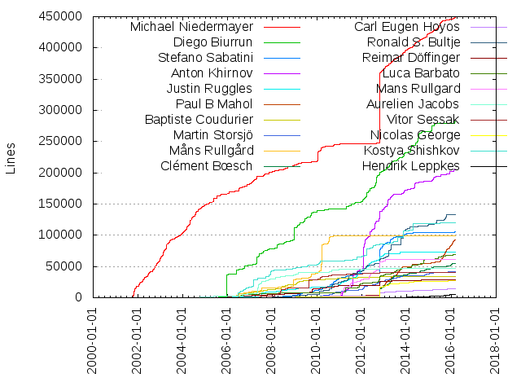
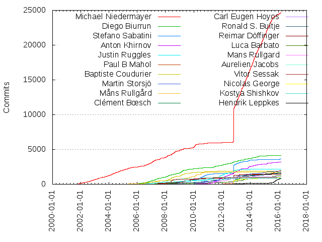

Authors
| Author | Commits (%) | + lines | - lines | First commit | Last commit | Age | Active days | # by commits |
|---|
| Michael Niedermayer | 24631 (31.24%) | 448868 | 265416 | 2001-10-11 | 2016-02-29 | 5253 days, 21:02:06 | 3576 | 1 |
| Diego Biurrun | 4140 (5.25%) | 281754 | 312719 | 2004-08-19 | 2016-02-19 | 4201 days, 1:03:27 | 1358 | 2 |
| Stefano Sabatini | 3589 (4.55%) | 105071 | 61199 | 2007-04-25 | 2016-01-27 | 3199 days, 1:13:51 | 1128 | 3 |
| Anton Khirnov | 3213 (4.07%) | 205162 | 176444 | 2008-05-22 | 2016-02-21 | 2830 days, 10:54:57 | 799 | 4 |
| Justin Ruggles | 2160 (2.74%) | 73275 | 41714 | 2005-05-05 | 2016-02-23 | 3946 days, 11:27:07 | 554 | 5 |
| Paul B Mahol | 1969 (2.50%) | 92663 | 34202 | 2011-11-29 | 2016-02-28 | 1551 days, 21:20:21 | 658 | 6 |
| Baptiste Coudurier | 1917 (2.43%) | 34149 | 21431 | 2006-01-22 | 2012-03-21 | 2249 days, 15:38:08 | 533 | 7 |
| Martin Storsjö | 1873 (2.38%) | 41815 | 18366 | 2006-12-08 | 2016-01-22 | 3331 days, 19:26:29 | 691 | 8 |
| Måns Rullgård | 1706 (2.16%) | 98588 | 55649 | 2002-10-06 | 2011-08-01 | 3220 days, 18:14:58 | 530 | 9 |
| Clément Bœsch | 1690 (2.14%) | 55330 | 25562 | 2011-01-10 | 2016-02-29 | 1875 days, 23:43:44 | 555 | 10 |
| Carl Eugen Hoyos | 1563 (1.98%) | 14278 | 6780 | 2007-02-13 | 2016-03-01 | 3304 days, 16:41:59 | 808 | 11 |
| Ronald S. Bultje | 1517 (1.92%) | 133001 | 67774 | 2004-03-13 | 2016-02-08 | 4348 days, 22:24:32 | 582 | 12 |
| Reimar Döffinger | 1462 (1.85%) | 29001 | 17943 | 2004-08-10 | 2016-02-26 | 4216 days, 20:14:21 | 572 | 13 |
| Luca Barbato | 1252 (1.59%) | 68577 | 47015 | 2000-12-31 | 2016-02-19 | 5527 days, 12:41:23 | 659 | 14 |
| Mans Rullgard | 1088 (1.38%) | 61552 | 51155 | 2010-04-20 | 2013-01-23 | 1009 days, 4:15:53 | 322 | 15 |
| Aurelien Jacobs | 1016 (1.29%) | 46693 | 39186 | 2003-12-12 | 2011-09-25 | 2843 days, 21:10:20 | 345 | 16 |
| Vitor Sessak | 940 (1.19%) | 40066 | 16379 | 2007-05-07 | 2014-09-17 | 2690 days, 10:14:49 | 235 | 17 |
| Nicolas George | 913 (1.16%) | 27655 | 10027 | 2007-05-02 | 2015-11-29 | 3133 days, 1:10:19 | 322 | 18 |
| Kostya Shishkov | 846 (1.07%) | 119617 | 20426 | 2004-11-11 | 2015-04-10 | 3801 days, 9:41:52 | 480 | 19 |
| Hendrik Leppkes | 769 (0.98%) | 5496 | 2839 | 2011-02-04 | 2016-02-12 | 1833 days, 19:53:25 | 168 | 20 |
These didn't make it to the top: Vittorio Giovara, Ramiro Polla, James Almer, Fabrice Bellard, Alex Converse, Janne Grunau, Derek Buitenhuis, Peter Ross, David Conrad, Marton Balint, Loren Merritt, Ganesh Ajjanagadde, Alex Beregszaszi, Andreas Cadhalpun, Lukasz Marek, Christophe Gisquet, Timothy Gu, Mike Melanson, Luca Abeni, Jason Garrett-Glaser, Benoit Fouet, Panagiotis Issaris, Laurent Aimar, Benjamin Larsson, Rostislav Pehlivanov, Zdenek Kabelac, wm4, Tomas Härdin, Reynaldo H. Verdejo Pinochet, Oded Shimon, Philip Gladstone, Roman Shaposhnik, Piotr Bandurski, Alexander Strange, Mashiat Sarker Shakkhar, Anssi Hannula, Jai Menon, Matthieu Bouron, Thilo Borgmann, François Revol, Guillaume Poirier, Ivan Kalvachev, Robert Swain, Reinhard Tartler, Samuel Pitoiset, Rodger Combs, Lou Logan, Daniel Verkamp, Stefan Gehrer, Daniel Kang, Andreas Öman, Gwenole Beauchesne, Roberto Togni, Philip Langdale, Mickaël Raulet, Alexander Strasser, Vladimir Voroshilov, Joakim Plate, Nick Kurshev, Henrik Gramner, Andrey Utkin, Kieran Kunhya, James Zern, Tim Walker, Diego Elio Pettenò, John Stebbins, Ivo van Poorten, Víctor Paesa, Jeff Downs, Juanjo, Jean First, Josh Allmann, James Darnley, Rémi Denis-Courmont, Arpi, Marc Hoffman, Diego Pettenò, rogerdpack, Nathan Caldwell, Vignesh Venkatasubramanian, Aneesh Dogra, Sascha Sommer, Michael Bradshaw, Falk Hüffner, Michel Bardiaux, Maxim Poliakovski, Ben Littler, Matt Oliver, Giorgio Vazzana, Shivraj Patil, Claudio Freire, Stephen Hutchinson, ami_stuff, Dave Yeo, Ben Avison, Wolfram Gloger, Alexandra Hájková, Zuxy Meng, Rafaël Carré, Cédric Schieli, zhaoxiu.zeng, Thierry Foucu, Jordi Ortiz, Ivan Schreter, Dale Curtis, Bobby Bingham, Yusuke Nakamura, Sean McGovern, Himangi Saraogi, Dustin Brody, Anshul Maheshwari, Alexis Ballier, Oskar Arvidsson, Sebastien Zwickert, Nedeljko Babic, Mats Peterson, Eli Friedman, Michael Kostylev, Compn, Aman Gupta, Tobias Rapp, Timo Rothenpieler, Rong Yan, 周晓勇, Zhang Rui, Mark Reid, Ivan Uskov, jamal, Kenan Gillet, Guillaume Martres, Vladimir Pantelic, Steven M. Schultz, Steve L'Homme, Pascal Massimino, Mohamed Naufal, Maksym Veremeyenko, Gilles Chanteperdrix, Björn Axelsson, highgod0401, Zhentan Feng, Tobias Bindhammer, Sebastian Vater, Nidhi Makhijani, Jean Delvare, multiple authors, Jindřich Makovička, Muhammad Faiz, JULIAN GARDNER, Xi Wang, Tom Butterworth, Thomas Volkert, Stephan Holljes, Nico Sabbi, Howard Chu, Christophe GISQUET, Nick Brereton, Matthieu Castet, Donny Yang, Art Clarke, S.N. Hemanth Meenakshisundaram, Gabriel Dume, Alex Smith, Rainer Hochecker, Bartlomiej Wolowiec, Alan Curry, Roine Gustafsson, Robert Krüger, Mike Scheutzow, Mark Himsley, Mariusz Szczepańczyk, Georgi Chorbadzhiyski, Francesco Lavra, Vicente Olivert Riera, Romain Dolbeau, Niklesh, Mina Nagy Zaki, Michael Chinen, Limin Wang, Kevin Wheatley, Federico Tomassetti, foo86, Young Han Lee, Tim Nicholson, Simon Thelen, Mika Raento, Jindrich Makovicka, Jan Ekström, James Cowgill, D Richard Felker III, Arttu Ylä-Outinen, Andrew Wason, Alexandra Khirnova, Alberto Delmás, Xidorn Quan, Uoti Urpala, Siarhei Siamashka, Robert Nagy, Peter Meerwald, Patrik Kullman, Patrice Bensoussan, Dominik Mierzejewski, Christian Schmidt, Arwa Arif, Anuradha Suraparaju, Andrew Stone, Alessandro Ghedini, avcoder, Philip de Nier, Keiji Costantini, John Brooks, Gildas Bazin, Georg Lippitsch, Frank Barchard, Etienne Buira, Corey Hickey, Yu Xiaolei, Ryan Martell, Pedro Arthur, Lars Täuber, Joseph Artsimovich, Ian Caulfield, Duncan Salerno, Dave Rice, Alex Agranovsky, Aaron Colwell, anonymous, Pavel Koshevoy, Olivier Langlois, Nicolas Bertrand, Neil Birkbeck, Matthew Oliver, Leon van Stuivenberg, Kostya, Google Chrome, Dmitry Samonenko, Daniel Kristjansson, Bryan Huh, Alexandre Colucci, anatoly, Supraja Meedinti, Steve Lhomme, Sergiy, Michael Karcher, Mark Harris, Marc-Antoine Arnaud, Kyle Swanson, KO Myung-Hun, Gavin Kinsey, Felix Bünemann, Dominique Leuenberger, Calcium, Ben Jackson, gcocherel, Uwe L. Korn, Shitiz Garg, Rob Sykes, Panagiotis H.M. Issaris, Loïc Le Loarer, Kirill Gavrilov, Elvis Presley, Dieter, Chris Evans, Ben Boeckel, Anton Mitrofanov, İsmail Dönmez, Wolfgang Hesseler, Stephan Hilb, Stefan Huehner, Roland Scheidegger, Ricardo Constantino, Reuben Martin, Peter Cordes, Oana Stratulat, NVIDIA Corporation, Martin Storsjo, Ludmila Glinskih, Lenny Wang, Katerina Barone-Adesi, Janusz Krzysztofik, Ian Braithwaite, Gianluigi Tiesi, Francesco Cosoleto, David Goldwich, Andrew Kelley, Anatoly Nenashev, Agatha Hu, plepere, Zohar Kelrich, William Yu, Todd Kirby, Thorsten Jordan, Sven Hesse, Sam Hocevar, Raivo Hool, Neil Brown, Mohamed Naufal Basheer, Micah Galizia, Matthew Heaney, Kevin Mitchell, Joseph Wecker, John Van Sickle, John Dalgliesh, Jan Gerber, Ingo Brückl, Gildas Cocherel, George Boyle, Edouard Gomez, Ed Torbett, Dirk Ausserhaus, Christian Suloway, Brian Foley, Brian Brice, Brad, Alexander Kojevnikov, elupus, d s, chinshou, Yayoi, Vittorio Gambaletta (VittGam), Vitaliy E Sugrobov, Vidar Madsen, Vesselin Bontchev, Thomas Mundt, Steven Robertson, Seppo Tomperi, Sebastian Dröge, Ronald Bultje, Reinhard Nissl, Niobos, Niels Möller, Moritz Barsnick, Matti Hamalainen, Matthew Einhorn, Matt Wolenetz, Marvin Scholz, Loic Le Loarer, Kamil Nowosad, Jovan Zelincevic, John Adlum, Jean-Daniel Dupas, Jakub Stachowski, Hetz Ben Hamo, Haruhiko Yamagata, Gregory Montoir, Graham Booker, Gaullier Nicolas, Erik Hovland, Denes Balatoni, Dan Christiansen, Colin McQuillan, Charles Yates, Bojan Zivkovic, BERO, zhentan feng, tripp, shahriman AMS, nu774, j@v2v.cc, addr-see-the-website@aetey.se, ZhouXiaoyong, Werner Robitza, Victor Vasiliev, Tristan Matthews, Rudolf Polzer, Roman Savchenko, Robert Edele, Przemysław Sobala, Peter Holik, Peter Belkner, Paul B. Mahol, Oliver Fromme, Nicolas Martyanoff, Nicholas Robbins, Nathan Kurz, Max Krasnyansky, Mathieu Malaterre, Martin Vignali, Mark Hills, Mark Cox, Laurentiu Ion, Jérémy Tran, Jeremy James, Jacob Meuser, Georg Martius, Gaurav Narula, Evgeniy Stepanov, Erik Slagter, Eric Lasota, Eloi BAIL, Dmitry Volyntsev, Can Wu, Alex Sukhanov, root, mrlika, erankor, Zhou Zongyi, Yuriy Kaminskiy, Yartrebo, Tomer Barletz, Tom Harper, Tim.Nicholson, Themaister, Takashi Mochizuki, Sven Dueking, Sven C. Dack, Stephen Warren, Sisir Koppaka, Serhii Marchuk, Senthilnathan M, Sebastian Sandberg, Schenk, Michael, Roman Fietze, Pierre Lombard, Petri Hintukainen, Paul Kendall, Patrick Dehne, Omer Osman, Nathan Adil Maxson, Mikulas Patocka, Mike Williams, Mike Frysinger, Mason Carter, Martin Lambers, Marco Gerards, Lennert Buytenhek, Lars Kiesow, Kyle, Jürgen Keil, Jörg Krause, Jonne Ahner, JonY, Jon Morley, John Högberg, John Cox, Johan Andersson, Joel Holdsworth, Jan Knutar, J. Bohl, Hendrik Schreiber, Hanspeter Niederstrasser, Gustavo Sverzut Barbieri, Gil Pedersen, Gael Chardon, Dujardin Bernard, Don Moir, Djordje Pesut, Dirk Farin, Denis Fortin, Deb Mukherjee, Christophe Massiot, Chiranjeevi Melam, Burkhard Plaum, Brad Smith, Boris Maksalov, Bohdan Horst, Bill Eldridge, Bela Bodecs, Antonio Ospite, Andriy Rysin, Andrey Myznikov, Andrew Van Til, Andreas Unterweger, Allan Hsu, Alexander E. Patrakov, kemuri, compn, clsid2, burek, Yoshihisa Uchida, Will Kelleher, Ville Skyttä, Vicente Jimenez Aguilar, Vadim Kalinsky, Urvang Joshi, Tucker DiNapoli, Timofei V. Bondarenko, ThomasVolkert, Thomas Raivio, Thomas Guillem, Thijs Vermeir, Stefano Pigozzi, Stefan de Konink, Stefan Pöschel, Sigbjørn Skjæret, Sergey Vlasov, Sergey Radionov, Sebastien Bechet, Rukhsana Ruby, Ray Simard, Piotr Kaczuba, Pierre Edouard Lepere, Oka Motofumi, Nicolas Plourde, Nicolas Noirbent, Nicolas Boos, Nicholas Tung, MrBoogs, Moritz Bunkus, Mohammad Alsaleh, Miroslav Slugeň, Mirjana Vulin, Milan Cutka, Michael Benjamin, Micah F. Galizia, Mean, Maxym Dmytrychenko, Max Horn, Matthew Hoops, Masaki Tanaka, Martin Panter, Mark Visser, Marek Fort, Marcus Engene, Marcelo Galvăo Póvoa, Manfred Georg, Maneesh Gupta, Kurtnoise, Konstantin Todorov, Konstantin Pavlov, Konstantin Andreyev, Konrad Iturbe, Kirill Zorin, Kharkov Alexander, Kevin Baragona, Kanglin, Justin Greer, Jimmy Christensen, Jeff Muizelaar, Jean-Baptiste Kempf, Jason, Ilya Basin, Hugo Beauzée-Luyssen, Heesuk Jung, Hauke Duden, Hagen Schmidt, Google, Gonzalo Garramuno, Glenn Maynard, Gert Vervoort, Fred Rothganger, Federico Simoncelli, Erik Olofsson, Emiliano Parasassi, Dylan Yudaken, Drew Hess, Diego Elio 'Flameeyes' Pettenò, Dan Maas, Cyril Russo, Chriss, Chris Watkins, Chris Rankin, Chris Flerackers, Chris Berov, Chip, Billy Shambrook, Benjamin Zores, Axel Holzinger, Attila Kinali, Ash Hughes, Arnaud Bienner, Andrey Semashev, Andrew D'Addesio, Anders Grönberg, Alexei Svitkine, Alexandre Sicard, yang, wg, u-bo1b@0w.se, tue46wsdgxfjrt, slhck, sfan5, sedacca@comcast.net, sebist, royger, longstone, jan gerber, hakuya, haim alon, db0company, danielgtaylor, clook, agathah, Zhaoxiu Zeng, Zeng Zhaoxiu, Yu-Jie Lin, Yordan Makariev, Yao Wang, Yann Coupin, Yan Jing, Xiaohui Sun, Xiaohan Wang, XV, XBMC, Wim Lewis, Vincent Fourmond, Vincent Bernat, Vilius Grigaliūnas, Vasyl' Vavrychuk, Vallimar, Tudor Suciu, Tony Strauss, Timothy B. Terriberry, Timo Teräs, Tim Chick, Tilman Brock, Thomas Kühnel, Thomas Jarosch, Thijs, Thadeu Lima de Souza Cascardo, Thad Ward, Ståle Kristoffersen, Stian Selnes, Steven Liu, Steve Jiekak, Stephen Backway, Stephan Soller, Stefan Kost, Stefan Fritsch, Stanislav Brabec, Slavik Gnatenko, Sigbjorn Skjaeret, Shiz, Sean Soria, Sasi Inguva, Sam Lantinga, Sam Gerstein, Roumen Petrov, Ronen Mizrahi, Roger Pau Monné, Rodney Baker, Robert Schlabbach, Robert Marston, Robert Leatherwood, Rico Tzschichholz, Reto Kromer, Raymond Hilseth, Piero Bugoni, Philipp Matthias Hahn, Petter Ericson, Peter Tissen, Peter Schlaile, Peter Krefting, Peter B, Paweł Hajdan, Jr, Pavel Pavlov, Paul Kelly, Paul Flinders, Patrice Clement, Olivier Guilyardi, Oliver Pfister, Oleksij Rempel, Nigel Touati-Evans, Nigel Pearson, Niel van der Westhuizen, Nico Weber, Nick Lewycky, Ni Hui, Morten Hustveit, Michael Lynch, Michael Kaufmann, Maximilian Seesslen, Max Shakhmetov, Max Poliakovski, Matthieu Crapet, Mathieu Velten, Martin Zlomek, Martin Sliwka, Martin Ettl, Martin Drab, Martin Boehme, Marcus Gustafsson, Marco Manfredini, Marco Gittler, Marc Mason, Magnus Damm, Maarten Daniels, Lyubomir Marinov, Liviu Oniciuc, Leandro Dorileo, Lazaros Koromilas, Laurent Desnogues, Laurent, Larbi Joubala, LYF, Kevin Kuphal, Kacper Michajłow, K.Y.H, Justin Johnson, Julien Ramseier, Julian Scheel, Juan Carlos Rodriguez, João Bernardo, Josh Coalson, Jonathan Baldwin, Jonathan Baecker, John Wimer, John Peebles, Johannes Carlsson, Joakim Roubert, Jernej Virag, Jernej Fijačko, Jeremy Kolb, Jeremy Hinegardner, Jeffrey Wescott, Javier Cabezas, James Morrison, James A. Morrison, Ilya, Henry Mason, Henrik Gulbrandsen, Harshit Mittal, Hans-Kristian Arntzen, Hans Zandbelt, Gregory J. Wolfe, Gopu Govindaswamy, Glenn A. Serre, Giancarlo Formicuccia, Geza Lore, Gavriloaie Eugen-Andrei, Gabucino, Gabor Nagy, Fredrik Orderud, Fredrik Axelsson, Frantisek Dvorak, Frank Galligan, Francois Oligny-Lemieux, Francisco Javier Cabello Torres, Florent Le Coz, Flavio Pimentel Duarte, Ferdinand Oeinck, Felix von Leitner, Felix Abecassis, Felipe Contreras, Fabian Greffrath, Eric Zimmerman, Eejya Singh, Edgar Hucek, Eddie Pang, Dmitry Baryshkov, Diogo Franco, Di Wu, Deti Fliegl, David S. Miller, David Hill, David Fries, David Bryant, Daniel Serpell, Daniel Moran, Daniel Huang, Dan Flett, Cyril Comparon, Colin Leroy, Chris Spencer, Cheng Sun, Caligula useraccount, Brian Becker, Brandon Mintern, Bill O'Shaughnessy, Bernhard Rosenkränzer, Bernd Kuhls, Bernd Bleßmann, Ben Hagen, Balint Marton, Asen Lekov, Anuj Mittal, Anshul Maheswhwari, Anne-Laure de Smit, Andy Parkins, Andrew Euell, Andres Mejia, Andres Gonzalez, Anatoliy Wasserman, Ami Fischman, Alok Ahuja, Allen Day, Allan Sandfeld Jensen, Alexander Wichers, Alexander V. Lukyanov, Alexander Drozdov, Alexander Chemeris, Alessandro Sappia, Aleksi Nurmi, Aleksey Vasenev, Albert Astals Cid, Alban Bedel, Adrian Drzewiecki, 赵宇龙, 内田佳久, 俞晓磊, Серж Нискородов, Михаил Муковников, Øyvind Kolås, zylthinking, zjh8890, yukari yakumo, wanzhang, wangxingchao, wang-bin, vle, upsuper, unknown author, trueice@gmail.com, tralph11@yahoo.com, tjraivio@cc.hut.fi, tjcannell@blueyonder.co.uk, tipok, tateu, tab, srikanth, skal, shinya.tesutosan@hotmail.com, selsta, schenk michael, rsn8887, raxon1s, qrtt1, popcornmix, pin xue, olugbone, mrskman, mplayer developers, michael, maxlazarov, lvqcl, lummax, lemonlinger@gmail.com, lars.taeuber@web.de, kyh96403, kweiner@spamcop.net, kowalsky, kaptnole, jwestfall@surrealistic.net, joca@rixmail.se, jessejiang, jb@kdenlive.org, gs_gail, goodthanks, gerion.entrup@t-online.de, flybird2k@gmail.com, ferdo@bigroses.nl, ePirat, dronus, diane_cartman@gmx.de, dhead666, dedicatedbroadcastsolutions, db0, csheng, corp186, bubu, bruce-wu, borat@subsense.com, bbraun, batguano999, banastasov, arwa arif, anatolschwarz, alexandru_mg3, alahuja, Zongyao Qu, Zoltán Hidvégi, Zoltan Kovacs, Zhihang Wang, Zhao Zhili, Zalewa PL, Zalewa, Yukinori Yamazoe, YuDenzel, Yong, Yogender Kumar Gupta, Yoav Steinberg, Yao Peter, Yang Wang, Yaakov Selkowitz, Y.C. Liu, Xiaolei Yu, Xiangyu Liu, XhmikosR, Wolfgang Scherer, Wim Vander Schelden, Willy Aubry, William R. Zwicky, William Juwono, WereCatf, Wei-Cheng Pan, Wan-Teh Chang, Wallak, Voyager1, Volker Moell, Vladlen Y. Koshelev, Vladimir Dergachev, Vincent Torri, Ville Syrjälä, Victor Pollex, Victor Lopez, Victor Anjin, Valeriy Argunov, ValdikSS, Vadim Belov, Umair Khan, Tyler, Tuukka Toivonen, Tudor.Suciu, Tsvetelina Borisova, Trevor \\\\ Higgins, Toshimitsu Kimura, Torsten Martinsen, Torsten Jager, Tomás Touceda, Tommy Winther, Tom Marecek, Tom Joseph, Tom Finegan, Tom Evans, Tinic Uro, Tinglin Liu, Timo Lindfors, Tim W, Tim Allen, Thomas Weber, Thomas Lee, Thomas Devanneaux, Thierry Fauck, Thierry FAUCK, Thiago Santos, The makemkv authors, Tao Huang, Tanja Batchelor, Tanami, Ohad, TOYAMA Shin-ichi, Sébastien Brochet, Sylvain Rabot, Sylvain Fabre, Sylvain Corré, Syed Andaleeb Roomy, Stuart Morris, Stoian Ivanov, Steven Walters, Steven Johnson, Steven Boswell II, Steve Dierker, Steve Borho, Stephen Dredge, Stephen Davies, Stephen D'Angelo, Stephan Vedder, Stepan Bujnak, Stefan Lucke, Star Brilliant, Srikanth G, Sprezz, Speedy Gonzales, Sjoerd Simons, Simon A. Eugster, Sidik Isani, Shin-ichi Toyama, Shiina Hideaki, Shehzad Salim, Shawn Singh, Shawn Rainey, Shane, Sergiy Gur'yev, Sergio Garcia Murillo, Sergey, Sebastien Lucas, Sebastian Ramacher, Sebastian Jedruszkiewicz, Samuli Valo, Sami Pietilä, Sami Pietila, Rémi Guyomarch, Ryutaroh Matsumoto, Ruoyu, Rumin Sam, Roy Sigurd Karlsbakk, Roxis, Ronaldo Moura, Roman Ryltsov, Roman Arutyunyan, Romain Degez, Romain Beauxis, Rocky Cardwell, Robert Xiao, Robert Lippmann, Rick van der Zwet, Rick Kern, Richard van der Hoff, Richard Hodges, Richard Buteau, Richard, Reuben Thomas, Rens Dijkshoorn, Rene Rebe, Ralf Terdic, Raffaele Sena, R. Brian Anderson, Quoc Cuong Pham, Pranav Vaish, Piotr Tomasik, Piotr Fusik, Pino Toscano, Pilotware, Pierre Yves MORDRET, Pierre Lejeune, Philippe Saint-Pierre, Philippe De Muyter, Philip DeCamp, Phil Rutschman, Phil Barrett, Petr Doubek, Peter Kovář, Peter Hall, Peter Große, Pete Eberlein, Perette Barella, Pedro E. M. Brito, Paul Sterne, Paul Egan, Paul Curtis, Patrik, Patric Stout, Paolo Bizzarri, Palle Lyckegaard, Onur Küçük, Oliver Collyer, Ole Dittmann, Ole Andre Birkedal, Nolan L, Niv Sardi, Nir Ben David, Nilesh Bansal, Nikolai Zhubr, Niklas Haas, Niki W. Waibel, Nicolas Martin, Nicolas Kaiser, Nicolas DEROUINEAU, Neil Armstrong, Nazo, Nash Tsai, Naoya OYAMA, Multiple Authors, Monty Montgomery, Miles Gould, Mike William, Mike Edenfield, Mike Brown, Mikael Finstad, Mihnea Balta, Michele Orrù, Michaël Cinquin, Michael Tison, Michael T. Dean, Michael Stypa, Michael Smith, Michael Schenk, Michael McConnell, Michael Ira Krufky, Michael Dorr, Michael Donaghy, Metaksakis Georgios, Maxim Polijakowski, Maxim Andreev, Max Lazarov, Matthijs Douze, Matthias Schneider, Matthias Hunstock, Matthias Hopf, Matthias Fritschi, Matthew Szatmary, Matthew Lindner, Matteo Nastasi (mop), Mathias Rauen, Mate Sebok, Masa Utashiro, Martin T. H. Sandsmark, Martin Olschewski, Martin Matuska, Martin Lindhe, Martin Fiedler, Martin Aumüller, Martin, Marko Kreen, Mark Webster, Mark Weaver, Mark McGough, Mark Goodman, Mark Boorer, Mario Gasparoni, Marcus Stollsteimer, Marcin Juszkiewicz, Marc Jeffreys, Manfred Tremmel, Malcolm Bechard, Maksalov Boris, Mahendra M, Lvqier, Lucas de Andrade, Loren Osborn, Lord, LoRd_MuldeR, LiuQi, Likai Liu, Leandro Santiago, Laurent BRULET, Lasse Reinhold, Lars Hammarstrand, Kylie McClain, Kurosu, Kristian Amlie, Kohn Emil Dan, Kip Warner, Kim Nguyen, Kifayat ullah, Kieran, Kevin Coyle, Kent Mein, Kenneth Aafløy, Ken Mandelberg, Kelly Anderson, Keith Lawson, Karl Kiniger, Karl H. Beckers, Kari Lentz, Kareila, Jérôme Martinez, Justin Jacobs, Justin, Julian Scheid, José Miguel Gonçalves, Joshua Warner, Joshua Kordani, Josh de Kock, Josh Varner, Josh Harris, Jorge Acereda, Jonathan Nieder, Jonas Lindgren, Jonas Bechtel, John Schmiederer, John Ryland, John Robinson, John Horigan, John Fletcher, John Donaghy, John Adcock, Johannes Nixdorf, Johannes Feigl, Johan Ström, Johan Bilien, Joey Parrish, Joel Yliluoma, Jochen Strunk, Jeremy Morton, Jeremy Mordkoff, Jens Rosenboom, Jean-Yves Avenard, Jean-Tiare Le Bigot, Jean-Francois Thibert, Jean-Baptiste Mardelle, Jay Freeman, Javier Garcia, Jasper Taylor, Jason Tackaberry, Jason Millard, Jason Hsu, Janne Salonen, Jan Kratochvil, Jan Ehrhardt, James Yu, James Stembridge, James Klicman, Jake Sebastian-Jones, Ivan Wong, Ivan Pozdeev, Ivan Kovtunov, Ivan Efimov, Ivan, Isaac Richards, Isaac Dooley, Ilkka Ollakka, Ihar A. Tumashyk, Igor Mozolevsky, Igor Derzhavin, Ian Taylor, I. Po, Hii, Herve W, Henning Haaland Kulander, Helmut K. C. Tessarek, Heliodoro Tammaro, Heikki Lindholm, Harikrishnan Varma, Harald Karnet, Harald Axmann, Gábor Kovács, Gunther Piez, Guillaume LecrefECERF, Guennadi Liakhovetski, Gregory Maxwell, Greg Maxwell, Grant Carver, Gordon Irlam, Godwin Stewart, Glyn Kennington, Gian-Carlo Pascutto, Giacomo Comes, Gerion Entrup, Geek.Song, Gautam Gupta, Garrick Meeker, Gabriel Forté, Frederic Turmel, Frederic Jean, Fred, Franz Brauße, Frank Vernaillen, Frank Heckenbach, Fortin Denis, Florian Jacob, Florian Echtler, Florent Tribouilloy, Femi Adeyemi-Ejeye, FearThe1337, Facundo Gaich, Fabrizio Gennari, Fabien Cosse, Fabian Neundorf, Even Wiik Thomassen, Eugene Dzhurinsky, Erwan Ducroquet, Erik Auerswald, Eric Sesterhenn, Eric Petit, Eric Paul, Eric Buehl, Eran Kornblau, Enrique Arizón Benito, Emanuel Czirai, Eli Kara, Edward Hervey, Eduardo Bragatto, Eddie Hao, Earl Levine, Dylan Alex Simon, Dyami Caliri, Doug Larrick, Donald Ovcharov, Dmitry Monakhov, Dmitry Borisov, Dmitry Antipov, Deti fliegl, Derk-Jan Hartman, Dennis Melentyev, Deliang Fu, DeHackEd, David Monro, David Mitchell, David Liu, David Kment, David Holm, David DeHaven, David Czech, David Byron, David Bolt, David Bateman, David A. Sedacca, Dave Badia, Darryl Wallace, Darren Horrocks, Dario Andrade, Daniil Cherednik, Daniel Oberhoff, Daniel Maas, Daniel G. Taylor, Daniel Cardenas, Daniel Bomar, Dan Villiom Podlaski Christiansen, Damien Fetis, Damiano Galassi, DHE, Cyrille Faucheux, Craig Thomasson, Craig Nicol, Colin Ward, Clifford Wolf, Clemens Ladisch, Clay McClure, Christophe Mutricy, Christophe Lorenz, Christian d'Heureuse, Christian Lohmaier, Christian Hujer, Chris \"Koying\" Browet, Chris Wilson, Chris Stones, Chris Kennedy, Chris Halse Rogers, Chris Cunningham, Ching Yi, Chan, Chih-Wei Huang, Charlie Arnold, Changjiang Wei, ChanMin Kim, Cedric Vincent, Carl, Calvin Walton, C Chatterjee, Byte, Bryce W. Harrington, Bryce McLeod, Bruce Dawson, Brian Olson, Brian Crowell, Bret Hughes, Brendan Kehoe, Brandon Lees, Boris Reisig, Björn Sandell, Björn S, Bitbreaker/METALVOTZE X, Bill Pringlemeir, Bill May, Bernie Habermeier, Bernhard Übelacker, Benjamin Kerensa, Benedict Endemann, Ben Taylor, Ben Hutchings, Bastien Bouclet, Bartłomiej Wołowiec, Aviad Rozenhek, Atli Thorbjornsson, Assaf Yaari, Asad Mehmood, Artur Grabowski, Arthur Grant, ArnoB, Arne de Bruijn, AppChecker, Antti Seppälä, Antoine Cellerier, Anthoine Bourgeois, Anshul, Anne Aaron, Anh, Angelo Haller, Andy Wu, Andy Martin, Andy Gocke, André Pankratz, Andrey Turkin, Andrew Voznytsa, Andrew Shulgin, Andrew Savchenko, Andrew Ryan, Andrew Dennison, Andrej Peterka, Andrea3000, Andrea Gualano, Andrea Gianarro, Andre Wolokita, Andre Anjos, Anders Nystrom, Ancoron Luciferis, Allan Kristensen, Alfred E. Heggestad, Alexey Titov, Alexey Balekhov, Alexandre Lision, Alexander S. Drozdov, Alexander Bokovikov, Alex Zhukov, Alex Rønne Petersen, Alberto Delmas, Albert Lee, Alan Steremberg, Al@dneg.com, Akihiro Tsukada, Aidan Skinner, Agostino Sarubbo, Agent Smith, Adriano Pallavicino, Adrian Stutz, Adam Thayer, Adam Hoka, Aaron Graham, (no author)
Only top 20 authors shown
Only top 20 authors shown
| Month | Author | Commits (%) | Next top 5 | Number of authors |
|---|
| 2016-03 | Rostislav Pehlivanov | 3 (60.00% of 5) | Wan-Teh Chang, Carl Eugen Hoyos | 3 |
| 2016-02 | Derek Buitenhuis | 104 (20.68% of 503) | Michael Niedermayer, Paul B Mahol, Rostislav Pehlivanov, Timothy Gu, Marton Balint | 56 |
| 2016-01 | Michael Niedermayer | 114 (17.14% of 665) | Hendrik Leppkes, Paul B Mahol, Derek Buitenhuis, Andreas Cadhalpun, James Almer | 59 |
| 2015-12 | Ganesh Ajjanagadde | 82 (14.64% of 560) | Michael Niedermayer, Hendrik Leppkes, Paul B Mahol, Andreas Cadhalpun, Rostislav Pehlivanov | 59 |
| 2015-11 | Michael Niedermayer | 129 (22.71% of 568) | Hendrik Leppkes, Ganesh Ajjanagadde, Paul B Mahol, Derek Buitenhuis, Andreas Cadhalpun | 53 |
| 2015-10 | Hendrik Leppkes | 124 (15.66% of 792) | Ganesh Ajjanagadde, Michael Niedermayer, Paul B Mahol, Rostislav Pehlivanov, Vittorio Giovara | 69 |
| 2015-09 | Hendrik Leppkes | 158 (17.81% of 887) | Michael Niedermayer, Clément Bœsch, Paul B Mahol, Ganesh Ajjanagadde, Vittorio Giovara | 70 |
| 2015-08 | Michael Niedermayer | 118 (20.85% of 566) | Hendrik Leppkes, Rostislav Pehlivanov, Paul B Mahol, Ganesh Ajjanagadde, Andreas Cadhalpun | 71 |
| 2015-07 | Michael Niedermayer | 392 (42.89% of 914) | Vittorio Giovara, Paul B Mahol, James Almer, Anton Khirnov, Luca Barbato | 67 |
| 2015-06 | Michael Niedermayer | 393 (52.05% of 755) | Vittorio Giovara, Andreas Cadhalpun, James Almer, Paul B Mahol, Shivraj Patil | 64 |
| 2015-05 | Michael Niedermayer | 433 (59.48% of 728) | Vittorio Giovara, Andreas Cadhalpun, Carl Eugen Hoyos, Ronald S. Bultje, James Almer | 49 |
| 2015-04 | Michael Niedermayer | 271 (42.95% of 631) | Vittorio Giovara, Andreas Cadhalpun, Ronald S. Bultje, wm4, James Almer | 63 |
| 2015-03 | Michael Niedermayer | 391 (50.52% of 774) | Vittorio Giovara, Carl Eugen Hoyos, Anton Khirnov, Martin Storsjö, Andreas Cadhalpun | 71 |
| 2015-02 | Michael Niedermayer | 436 (49.60% of 879) | Martin Storsjö, Paul B Mahol, Clément Bœsch, zhaoxiu.zeng, Christophe Gisquet | 56 |
| 2015-01 | Michael Niedermayer | 343 (48.79% of 703) | Anton Khirnov, Paul B Mahol, Vittorio Giovara, Martin Storsjö, Clément Bœsch | 55 |
| 2014-12 | Michael Niedermayer | 376 (56.46% of 666) | Vittorio Giovara, Ronald S. Bultje, Martin Storsjö, Clément Bœsch, Carl Eugen Hoyos | 60 |
| 2014-11 | Michael Niedermayer | 394 (47.58% of 828) | Lukasz Marek, Vittorio Giovara, Martin Storsjö, Clément Bœsch, Benoit Fouet | 65 |
| 2014-10 | Michael Niedermayer | 407 (54.93% of 741) | Vittorio Giovara, Martin Storsjö, Luca Barbato, Rémi Denis-Courmont, Carl Eugen Hoyos | 64 |
| 2014-09 | Michael Niedermayer | 238 (42.96% of 554) | Clément Bœsch, James Almer, Diego Biurrun, Reimar Döffinger, Gabriel Dume | 63 |
| 2014-08 | Michael Niedermayer | 404 (47.81% of 845) | Diego Biurrun, Christophe Gisquet, James Almer, Luca Barbato, Anton Khirnov | 65 |
| 2014-07 | Michael Niedermayer | 386 (46.23% of 835) | Diego Biurrun, Anton Khirnov, Mickaël Raulet, Timothy Gu, James Almer | 65 |
| 2014-06 | Michael Niedermayer | 359 (56.54% of 635) | James Almer, Diego Biurrun, Anton Khirnov, Carl Eugen Hoyos, Christophe Gisquet | 56 |
| 2014-05 | Michael Niedermayer | 411 (53.24% of 772) | Anton Khirnov, Lukasz Marek, James Almer, Carl Eugen Hoyos, Clément Bœsch | 66 |
| 2014-04 | Michael Niedermayer | 428 (53.30% of 803) | Anton Khirnov, Lukasz Marek, Carl Eugen Hoyos, Luca Barbato, Nicolas George | 64 |
| 2014-03 | Michael Niedermayer | 523 (59.57% of 878) | Vittorio Giovara, Luca Barbato, Anton Khirnov, Diego Biurrun, James Almer | 58 |
| 2014-02 | Michael Niedermayer | 340 (45.39% of 749) | Diego Biurrun, Anton Khirnov, Lukasz Marek, Vittorio Giovara, Janne Grunau | 62 |
| 2014-01 | Michael Niedermayer | 412 (49.88% of 826) | Diego Biurrun, Stefano Sabatini, Ronald S. Bultje, Carl Eugen Hoyos, Luca Barbato | 66 |
| 2013-12 | Michael Niedermayer | 447 (53.41% of 837) | Diego Biurrun, Anton Khirnov, Stefano Sabatini, Anssi Hannula, Nicolas George | 57 |
| 2013-11 | Michael Niedermayer | 426 (43.51% of 979) | Anton Khirnov, Stefano Sabatini, Diego Biurrun, Clément Bœsch, Paul B Mahol | 53 |
| 2013-10 | Michael Niedermayer | 401 (42.57% of 942) | Anton Khirnov, Paul B Mahol, Stefano Sabatini, Luca Barbato, Derek Buitenhuis | 56 |
| 2013-09 | Michael Niedermayer | 396 (45.36% of 873) | Paul B Mahol, Martin Storsjö, Clément Bœsch, Luca Barbato, Diego Biurrun | 54 |
| 2013-08 | Michael Niedermayer | 458 (57.18% of 801) | Diego Biurrun, Luca Barbato, Martin Storsjö, Paul B Mahol, Anton Khirnov | 55 |
| 2013-07 | Michael Niedermayer | 391 (49.37% of 792) | Paul B Mahol, Luca Barbato, Martin Storsjö, Carl Eugen Hoyos, Stefano Sabatini | 52 |
| 2013-06 | Michael Niedermayer | 267 (43.13% of 619) | Luca Barbato, Paul B Mahol, Carl Eugen Hoyos, Stefano Sabatini, Timothy Gu | 49 |
| 2013-05 | Michael Niedermayer | 511 (50.59% of 1010) | Paul B Mahol, Clément Bœsch, Anton Khirnov, Luca Barbato, Diego Biurrun | 49 |
| 2013-04 | Michael Niedermayer | 428 (40.61% of 1054) | Clément Bœsch, Paul B Mahol, Stefano Sabatini, Diego Biurrun, Anton Khirnov | 40 |
| 2013-03 | Michael Niedermayer | 409 (35.63% of 1148) | Anton Khirnov, Clément Bœsch, Nicolas George, Ronald S. Bultje, Stefano Sabatini | 57 |
| 2013-02 | Michael Niedermayer | 321 (35.67% of 900) | Anton Khirnov, Stefano Sabatini, Diego Biurrun, Paul B Mahol, Nicolas George | 53 |
| 2013-01 | Michael Niedermayer | 471 (45.16% of 1043) | Stefano Sabatini, Martin Storsjö, Paul B Mahol, Anton Khirnov, Diego Biurrun | 66 |
| 2012-12 | Michael Niedermayer | 369 (33.88% of 1089) | Clément Bœsch, Stefano Sabatini, Justin Ruggles, Paul B Mahol, Martin Storsjö | 50 |
| 2012-11 | Michael Niedermayer | 391 (36.82% of 1062) | Anton Khirnov, Paul B Mahol, Stefano Sabatini, Clément Bœsch, Diego Biurrun | 44 |
| 2012-10 | Michael Niedermayer | 495 (36.29% of 1364) | Mans Rullgard, Diego Biurrun, Justin Ruggles, Paul B Mahol, Stefano Sabatini | 65 |
| 2012-09 | Michael Niedermayer | 290 (34.61% of 838) | Stefano Sabatini, Derek Buitenhuis, Martin Storsjö, Clément Bœsch, Anton Khirnov | 64 |
| 2012-08 | Michael Niedermayer | 286 (27.66% of 1034) | Stefano Sabatini, Mans Rullgard, Nicolas George, Diego Biurrun, Justin Ruggles | 65 |
| 2012-07 | Michael Niedermayer | 254 (25.35% of 1002) | Paul B Mahol, Diego Biurrun, Nicolas George, Anton Khirnov, Stefano Sabatini | 56 |
| 2012-06 | Michael Niedermayer | 284 (32.64% of 870) | Stefano Sabatini, Anton Khirnov, Paul B Mahol, Nicolas George, Martin Storsjö | 53 |
| 2012-05 | Michael Niedermayer | 321 (34.78% of 923) | Clément Bœsch, Anton Khirnov, Mans Rullgard, Stefano Sabatini, Nicolas George | 49 |
| 2012-04 | Michael Niedermayer | 347 (38.47% of 902) | Justin Ruggles, Reimar Döffinger, Nicolas George, Diego Biurrun, Anton Khirnov | 55 |
| 2012-03 | Michael Niedermayer | 374 (36.59% of 1022) | Ronald S. Bultje, Paul B Mahol, Anton Khirnov, Justin Ruggles, Nicolas George | 67 |
| 2012-02 | Michael Niedermayer | 166 (17.58% of 944) | Justin Ruggles, Anton Khirnov, Ronald S. Bultje, Martin Storsjö, Paul B Mahol | 58 |
| 2012-01 | Michael Niedermayer | 218 (18.37% of 1187) | Anton Khirnov, Justin Ruggles, Paul B Mahol, Stefano Sabatini, Reimar Döffinger | 78 |
| 2011-12 | Michael Niedermayer | 346 (33.14% of 1044) | Diego Biurrun, Carl Eugen Hoyos, Justin Ruggles, Tomas Härdin, Mans Rullgard | 77 |
| 2011-11 | Michael Niedermayer | 299 (30.26% of 988) | Clément Bœsch, Anton Khirnov, Martin Storsjö, Carl Eugen Hoyos, Justin Ruggles | 75 |
| 2011-10 | Michael Niedermayer | 293 (28.92% of 1013) | Justin Ruggles, Anton Khirnov, Clément Bœsch, Mans Rullgard, Laurent Aimar | 64 |
| 2011-09 | Michael Niedermayer | 239 (24.72% of 967) | Laurent Aimar, Justin Ruggles, Anton Khirnov, Stefano Sabatini, Joakim Plate | 77 |
| 2011-08 | Anton Khirnov | 170 (28.43% of 598) | Michael Niedermayer, Stefano Sabatini, Alex Converse, Carl Eugen Hoyos, Reimar Döffinger | 43 |
| 2011-07 | Mans Rullgard | 106 (18.43% of 575) | Diego Biurrun, Stefano Sabatini, Michael Niedermayer, Anton Khirnov, Ronald S. Bultje | 53 |
| 2011-06 | Michael Niedermayer | 102 (14.51% of 703) | Stefano Sabatini, Mans Rullgard, Diego Biurrun, Ronald S. Bultje, Anton Khirnov | 63 |
| 2011-05 | Michael Niedermayer | 164 (19.14% of 857) | Stefano Sabatini, Anton Khirnov, Ronald S. Bultje, Mans Rullgard, Diego Biurrun | 73 |
| 2011-04 | Michael Niedermayer | 151 (20.41% of 740) | Stefano Sabatini, Anton Khirnov, Carl Eugen Hoyos, Diego Biurrun, Martin Storsjö | 71 |
| 2011-03 | Michael Niedermayer | 76 (12.69% of 599) | Anton Khirnov, Mans Rullgard, Stefano Sabatini, Peter Ross, Justin Ruggles | 64 |
| 2011-02 | Anton Khirnov | 106 (15.68% of 676) | Mans Rullgard, Justin Ruggles, Martin Storsjö, Ronald S. Bultje, Stefano Sabatini | 55 |
| 2011-01 | Mans Rullgard | 92 (13.31% of 691) | Stefano Sabatini, Justin Ruggles, Diego Elio Pettenò, Anton Khirnov, Michael Niedermayer | 47 |
| 2010-12 | Justin Ruggles | 122 (36.97% of 330) | Stefano Sabatini, Martin Storsjö, Daniel Kang, Ronald S. Bultje, Aurelien Jacobs | 35 |
| 2010-11 | Stefano Sabatini | 85 (36.96% of 230) | Reimar Döffinger, Baptiste Coudurier, Aurelien Jacobs, Anton Khirnov, Martin Storsjö | 33 |
| 2010-10 | Martin Storsjö | 70 (20.47% of 342) | Michael Niedermayer, Stefano Sabatini, Aurelien Jacobs, Ramiro Polla, Anton Khirnov | 34 |
| 2010-09 | Stefano Sabatini | 90 (29.22% of 308) | Måns Rullgård, Ronald S. Bultje, Ramiro Polla, Michael Niedermayer, Martin Storsjö | 40 |
| 2010-08 | Stefano Sabatini | 72 (18.95% of 380) | Måns Rullgård, Aurelien Jacobs, Ronald S. Bultje, Jason Garrett-Glaser, Vitor Sessak | 39 |
| 2010-07 | Måns Rullgård | 142 (19.27% of 737) | Stefano Sabatini, Diego Biurrun, Jason Garrett-Glaser, Vitor Sessak, Justin Ruggles | 55 |
| 2010-06 | Måns Rullgård | 81 (15.91% of 509) | Stefano Sabatini, Martin Storsjö, Alex Converse, Josh Allmann, Jason Garrett-Glaser | 55 |
| 2010-05 | Stefano Sabatini | 48 (15.00% of 320) | Martin Storsjö, Michael Niedermayer, David Conrad, Alex Converse, Baptiste Coudurier | 42 |
| 2010-04 | Stefano Sabatini | 46 (18.62% of 247) | Måns Rullgård, Michael Niedermayer, Ronald S. Bultje, Alex Converse, David Conrad | 41 |
| 2010-03 | Måns Rullgård | 133 (20.94% of 635) | Stefano Sabatini, David Conrad, Michael Niedermayer, Martin Storsjö, Alex Converse | 58 |
| 2010-02 | Michael Niedermayer | 171 (33.46% of 511) | Måns Rullgård, Stefano Sabatini, Kostya Shishkov, David Conrad, Carl Eugen Hoyos | 42 |
| 2010-01 | Michael Niedermayer | 188 (28.27% of 665) | Måns Rullgård, Stefano Sabatini, Reimar Döffinger, Ramiro Polla, Martin Storsjö | 51 |
| 2009-12 | Michael Niedermayer | 73 (22.53% of 324) | Diego Biurrun, Kostya Shishkov, Stefano Sabatini, Ramiro Polla, Carl Eugen Hoyos | 36 |
| 2009-11 | Stefano Sabatini | 49 (19.14% of 256) | Michael Niedermayer, Baptiste Coudurier, Reimar Döffinger, Vitor Sessak, Måns Rullgård | 33 |
| 2009-10 | Reimar Döffinger | 61 (19.37% of 315) | Stefano Sabatini, Måns Rullgård, Diego Biurrun, Justin Ruggles, Michael Niedermayer | 43 |
| 2009-09 | Reimar Döffinger | 77 (20.59% of 374) | Måns Rullgård, Diego Biurrun, Justin Ruggles, Michael Niedermayer, Benjamin Larsson | 36 |
| 2009-08 | Måns Rullgård | 46 (20.18% of 228) | Diego Biurrun, Ramiro Polla, Reimar Döffinger, Justin Ruggles, Vitor Sessak | 38 |
| 2009-07 | Måns Rullgård | 58 (22.57% of 257) | Diego Biurrun, Alex Converse, Reimar Döffinger, Ramiro Polla, Martin Storsjö | 26 |
| 2009-06 | Baptiste Coudurier | 51 (18.75% of 272) | Vladimir Voroshilov, Diego Biurrun, Stefano Sabatini, Jason Garrett-Glaser, Michael Niedermayer | 42 |
| 2009-05 | Baptiste Coudurier | 94 (27.09% of 347) | Reimar Döffinger, Diego Biurrun, Stefano Sabatini, Måns Rullgård, Ramiro Polla | 38 |
| 2009-04 | Michael Niedermayer | 101 (22.90% of 441) | Reimar Döffinger, Stefano Sabatini, Baptiste Coudurier, Ramiro Polla, Diego Biurrun | 37 |
| 2009-03 | Diego Biurrun | 114 (16.94% of 673) | Baptiste Coudurier, Reimar Döffinger, Justin Ruggles, Ronald S. Bultje, Michael Niedermayer | 36 |
| 2009-02 | Diego Biurrun | 162 (20.07% of 807) | Baptiste Coudurier, Michael Niedermayer, Aurelien Jacobs, Stefano Sabatini, Ivan Kalvachev | 55 |
| 2009-01 | Diego Biurrun | 88 (16.99% of 518) | Baptiste Coudurier, Michael Niedermayer, Aurelien Jacobs, Måns Rullgård, Carl Eugen Hoyos | 42 |
| 2008-12 | Michael Niedermayer | 118 (26.70% of 442) | Stefano Sabatini, Diego Biurrun, Måns Rullgård, Kostya Shishkov, Ronald S. Bultje | 45 |
| 2008-11 | Diego Biurrun | 47 (22.27% of 211) | Måns Rullgård, Kostya Shishkov, Ronald S. Bultje, Stefano Sabatini, Baptiste Coudurier | 28 |
| 2008-10 | Diego Biurrun | 40 (13.56% of 295) | Måns Rullgård, Michael Niedermayer, Diego Pettenò, Baptiste Coudurier, Aurelien Jacobs | 35 |
| 2008-09 | Michael Niedermayer | 132 (30.70% of 430) | Vitor Sessak, Baptiste Coudurier, Diego Biurrun, Aurelien Jacobs, Ronald S. Bultje | 38 |
| 2008-08 | Michael Niedermayer | 98 (15.05% of 651) | Aurelien Jacobs, Baptiste Coudurier, Justin Ruggles, Peter Ross, Stefano Sabatini | 42 |
| 2008-07 | Michael Niedermayer | 146 (31.06% of 470) | Vitor Sessak, Diego Biurrun, Måns Rullgård, Peter Ross, Baptiste Coudurier | 38 |
| 2008-06 | Baptiste Coudurier | 125 (27.53% of 454) | Michael Niedermayer, Vitor Sessak, Stefano Sabatini, Justin Ruggles, Diego Biurrun | 38 |
| 2008-05 | Vitor Sessak | 159 (27.18% of 585) | Baptiste Coudurier, Michael Niedermayer, Diego Biurrun, Justin Ruggles, Stefano Sabatini | 45 |
| 2008-04 | Vitor Sessak | 73 (20.28% of 360) | Michael Niedermayer, Baptiste Coudurier, Diego Biurrun, Stefano Sabatini, Måns Rullgård | 35 |
| 2008-03 | Diego Biurrun | 114 (28.57% of 399) | Baptiste Coudurier, Michael Niedermayer, Måns Rullgård, Aurelien Jacobs, Ramiro Polla | 36 |
| 2008-02 | Vitor Sessak | 192 (33.86% of 567) | Michael Niedermayer, Baptiste Coudurier, Diego Biurrun, Reimar Döffinger, Måns Rullgård | 30 |
| 2008-01 | Michael Niedermayer | 74 (20.00% of 370) | Diego Biurrun, Baptiste Coudurier, Justin Ruggles, Aurelien Jacobs, Reimar Döffinger | 43 |
| 2007-12 | Michael Niedermayer | 52 (20.72% of 251) | Diego Biurrun, Kostya Shishkov, Baptiste Coudurier, Justin Ruggles, Reimar Döffinger | 29 |
| 2007-11 | Diego Biurrun | 39 (17.03% of 229) | Aurelien Jacobs, Michael Niedermayer, Luca Abeni, Kostya Shishkov, Alex Beregszaszi | 32 |
| 2007-10 | Aurelien Jacobs | 61 (23.02% of 265) | Diego Biurrun, Jeff Downs, Baptiste Coudurier, Reimar Döffinger, Michael Niedermayer | 37 |
| 2007-09 | David Conrad | 99 (27.73% of 357) | Michael Niedermayer, Diego Biurrun, Ramiro Polla, Aurelien Jacobs, Loren Merritt | 37 |
| 2007-08 | Michael Niedermayer | 155 (36.05% of 430) | Diego Biurrun, Justin Ruggles, Ramiro Polla, Baptiste Coudurier, Reimar Döffinger | 39 |
| 2007-07 | Justin Ruggles | 53 (12.96% of 409) | Måns Rullgård, Aurelien Jacobs, Diego Biurrun, Michael Niedermayer, Vitor Sessak | 37 |
| 2007-06 | Måns Rullgård | 44 (14.97% of 294) | Diego Biurrun, Michael Niedermayer, Baptiste Coudurier, Ramiro Polla, Aurelien Jacobs | 36 |
| 2007-05 | Aurelien Jacobs | 75 (23.81% of 315) | Diego Biurrun, Loren Merritt, Michael Niedermayer, Ivo van Poorten, Ramiro Polla | 38 |
| 2007-04 | Diego Biurrun | 76 (24.92% of 305) | Michael Niedermayer, Alex Beregszaszi, Baptiste Coudurier, Ivo van Poorten, Aurelien Jacobs | 40 |
| 2007-03 | Michael Niedermayer | 140 (33.10% of 423) | Baptiste Coudurier, Panagiotis Issaris, Aurelien Jacobs, Diego Biurrun, Justin Ruggles | 43 |
| 2007-02 | Michael Niedermayer | 76 (20.16% of 377) | Diego Biurrun, Måns Rullgård, Panagiotis Issaris, Kostya Shishkov, Alex Beregszaszi | 35 |
| 2007-01 | Michael Niedermayer | 157 (38.29% of 410) | Diego Biurrun, Baptiste Coudurier, Reimar Döffinger, Måns Rullgård, Benjamin Larsson | 25 |
| 2006-12 | Michael Niedermayer | 53 (24.88% of 213) | Diego Biurrun, Måns Rullgård, Guillaume Poirier, Baptiste Coudurier, Panagiotis Issaris | 27 |
| 2006-11 | Michael Niedermayer | 67 (19.14% of 350) | Måns Rullgård, Diego Biurrun, Kostya Shishkov, Baptiste Coudurier, Aurelien Jacobs | 36 |
| 2006-10 | Oded Shimon | 124 (26.61% of 466) | Michael Niedermayer, Diego Biurrun, Baptiste Coudurier, Kostya Shishkov, Guillaume Poirier | 34 |
| 2006-09 | Panagiotis Issaris | 75 (28.85% of 260) | Michael Niedermayer, Kostya Shishkov, Diego Biurrun, Måns Rullgård, Baptiste Coudurier | 27 |
| 2006-08 | Michael Niedermayer | 75 (26.69% of 281) | Baptiste Coudurier, Diego Biurrun, Luca Barbato, Loren Merritt, Luca Abeni | 29 |
| 2006-07 | Michael Niedermayer | 74 (22.77% of 325) | Måns Rullgård, Diego Biurrun, Kostya Shishkov, Baptiste Coudurier, Stefan Gehrer | 26 |
| 2006-06 | Måns Rullgård | 38 (29.69% of 128) | Diego Biurrun, Michael Niedermayer, Baptiste Coudurier, Kostya Shishkov, Luca Barbato | 20 |
| 2006-05 | Michael Niedermayer | 22 (22.45% of 98) | Baptiste Coudurier, Diego Biurrun, Loren Merritt, Måns Rullgård, Kostya Shishkov | 19 |
| 2006-04 | Diego Biurrun | 15 (17.65% of 85) | Baptiste Coudurier, Michael Niedermayer, Loren Merritt, Luca Abeni, Måns Rullgård | 26 |
| 2006-03 | Michael Niedermayer | 62 (35.03% of 177) | Baptiste Coudurier, Loren Merritt, Diego Biurrun, Steve L'Homme, Robert Edele | 28 |
| 2006-02 | Michael Niedermayer | 37 (20.22% of 183) | Diego Biurrun, Måns Rullgård, Alex Beregszaszi, Loren Merritt, Alan Curry | 31 |
| 2006-01 | Diego Biurrun | 41 (34.75% of 118) | Michael Niedermayer, Benjamin Larsson, Loren Merritt, Reimar Döffinger, Dieter | 24 |
| 2005-12 | Michael Niedermayer | 33 (37.93% of 87) | Diego Biurrun, Roberto Togni, Måns Rullgård, Loren Merritt, François Revol | 18 |
| 2005-11 | Alex Beregszaszi | 15 (35.71% of 42) | Michael Niedermayer, Måns Rullgård, Loren Merritt, Guillaume Poirier, Diego Biurrun | 16 |
| 2005-10 | Alex Beregszaszi | 9 (18.00% of 50) | Loren Merritt, Mike Melanson, Roberto Togni, Diego Biurrun, Patrice Bensoussan | 19 |
| 2005-09 | Michael Niedermayer | 43 (53.09% of 81) | Diego Biurrun, Reimar Döffinger, Michel Bardiaux, Loren Merritt, Sam Hocevar | 16 |
| 2005-08 | Michael Niedermayer | 20 (35.09% of 57) | Mike Melanson, Steven M. Schultz, Alexander Strasser, Måns Rullgård, Justin Ruggles | 16 |
| 2005-07 | Michael Niedermayer | 48 (64.00% of 75) | Alex Beregszaszi, Vidar Madsen, Reimar Döffinger, Luca Abeni, Diego Biurrun | 17 |
| 2005-06 | Michael Niedermayer | 36 (40.91% of 88) | Diego Biurrun, Fabrice Bellard, Guillaume Poirier, Loren Merritt, Måns Rullgård | 20 |
| 2005-05 | Michael Niedermayer | 91 (55.49% of 164) | Måns Rullgård, Mike Melanson, Loren Merritt, Philip Gladstone, Jacob Meuser | 24 |
| 2005-04 | Michael Niedermayer | 37 (49.33% of 75) | Måns Rullgård, Yartrebo, Loren Merritt, Mike Melanson, Jindřich Makovička | 20 |
| 2005-03 | Michael Niedermayer | 47 (46.08% of 102) | Loren Merritt, Måns Rullgård, Calcium, Mike Melanson, François Revol | 17 |
| 2005-02 | Michael Niedermayer | 38 (43.18% of 88) | Alex Beregszaszi, anonymous, Loren Merritt, Reimar Döffinger, Mike Melanson | 30 |
| 2005-01 | Michael Niedermayer | 71 (55.91% of 127) | Roine Gustafsson, François Revol, Roberto Togni, anonymous, Loren Merritt | 23 |
| 2004-12 | Michael Niedermayer | 45 (71.43% of 63) | Panagiotis Issaris, Roberto Togni, Loren Merritt, Sigbjørn Skjæret, Roine Gustafsson | 13 |
| 2004-11 | Michael Niedermayer | 47 (70.15% of 67) | Loren Merritt, Mike Melanson, François Revol, Milan Cutka, Maarten Daniels | 13 |
| 2004-10 | Michael Niedermayer | 75 (62.50% of 120) | Mike Melanson, Roman Shaposhnik, Michel Bardiaux, Aurelien Jacobs, Wolfram Gloger | 23 |
| 2004-09 | Michael Niedermayer | 83 (70.34% of 118) | Alex Beregszaszi, Roman Shaposhnik, Mike Melanson, Loren Merritt, Roberto Togni | 13 |
| 2004-08 | Michael Niedermayer | 41 (66.13% of 62) | Alex Beregszaszi, Roman Shaposhnik, Mike Melanson, Todd Kirby, Roberto Togni | 13 |
| 2004-07 | Michael Niedermayer | 57 (64.77% of 88) | Roman Shaposhnik, Todd Kirby, Alex Beregszaszi, Patrice Bensoussan, Nicolas Boos | 22 |
| 2004-06 | Michael Niedermayer | 67 (66.34% of 101) | Mike Melanson, Alex Beregszaszi, Roberto Togni, Wolfram Gloger, Luca Abeni | 12 |
| 2004-05 | Michael Niedermayer | 69 (81.18% of 85) | Mike Melanson, Roberto Togni, Roman Shaposhnik, Romain Dolbeau, Sidik Isani | 9 |
| 2004-04 | Michael Niedermayer | 105 (64.81% of 162) | Mike Melanson, Alex Beregszaszi, Steven M. Schultz, Sascha Sommer, Romain Dolbeau | 22 |
| 2004-03 | Michael Niedermayer | 56 (50.00% of 112) | Mike Melanson, Roman Shaposhnik, Ivan Kalvachev, Zdenek Kabelac, Leon van Stuivenberg | 18 |
| 2004-02 | Michael Niedermayer | 64 (69.57% of 92) | Roman Shaposhnik, Alex Beregszaszi, Steven M. Schultz, Gildas Bazin, Roberto Togni | 16 |
| 2004-01 | Michael Niedermayer | 73 (74.49% of 98) | Mike Melanson, Roberto Togni, Alex Beregszaszi, Kevin Kuphal, Steven M. Schultz | 10 |
| 2003-12 | Michael Niedermayer | 54 (56.84% of 95) | Fabrice Bellard, Mike Melanson, Alex Beregszaszi, Wolfgang Hesseler, Steven M. Schultz | 9 |
| 2003-11 | Michael Niedermayer | 40 (44.44% of 90) | Fabrice Bellard, Roberto Togni, Mike Melanson, Michel Bardiaux, Zdenek Kabelac | 15 |
| 2003-10 | Michael Niedermayer | 70 (48.28% of 145) | Mike Melanson, Alex Beregszaszi, Roman Shaposhnik, Fabrice Bellard, Dan Christiansen | 19 |
| 2003-09 | Michael Niedermayer | 43 (30.28% of 142) | Fabrice Bellard, Mike Melanson, Roman Shaposhnik, Alex Beregszaszi, Glenn Maynard | 16 |
| 2003-08 | Fabrice Bellard | 43 (49.43% of 87) | Michael Niedermayer, Roman Shaposhnik, Mike Melanson, Magnus Damm, D Richard Felker III | 8 |
| 2003-07 | Michael Niedermayer | 48 (48.00% of 100) | Fabrice Bellard, Alex Beregszaszi, Ivan Kalvachev, Roman Shaposhnik, Romain Dolbeau | 14 |
| 2003-06 | Michael Niedermayer | 25 (31.65% of 79) | Fabrice Bellard, Alex Beregszaszi, Mike Melanson, Hetz Ben Hamo, Nick Kurshev | 14 |
| 2003-05 | Michael Niedermayer | 40 (40.40% of 99) | Mike Melanson, Zdenek Kabelac, BERO, Alex Beregszaszi, Roman Shaposhnik | 16 |
| 2003-04 | Michael Niedermayer | 54 (47.79% of 113) | Fabrice Bellard, Philip Gladstone, Roman Shaposhnik, Zdenek Kabelac, François Revol | 15 |
| 2003-03 | Michael Niedermayer | 68 (62.96% of 108) | Zdenek Kabelac, François Revol, Roman Shaposhnik, Philip Gladstone, Leon van Stuivenberg | 16 |
| 2003-02 | Michael Niedermayer | 45 (42.45% of 106) | Fabrice Bellard, Zdenek Kabelac, Philip Gladstone, François Revol, Mike Melanson | 11 |
| 2003-01 | Michael Niedermayer | 58 (39.73% of 146) | Fabrice Bellard, Romain Dolbeau, Zdenek Kabelac, Philip Gladstone, Nick Kurshev | 19 |
| 2002-12 | Michael Niedermayer | 49 (56.32% of 87) | Philip Gladstone, Fabrice Bellard, François Revol, Zdenek Kabelac, Dieter | 13 |
| 2002-11 | Michael Niedermayer | 44 (26.83% of 164) | Zdenek Kabelac, Fabrice Bellard, Philip Gladstone, François Revol, Arpi | 17 |
| 2002-10 | Michael Niedermayer | 63 (40.91% of 154) | Fabrice Bellard, Alex Beregszaszi, Falk Hüffner, Zdenek Kabelac, Nick Kurshev | 15 |
| 2002-09 | Michael Niedermayer | 72 (69.90% of 103) | Falk Hüffner, Philip Gladstone, Lennert Buytenhek, Arpi, Alex Beregszaszi | 12 |
| 2002-08 | Michael Niedermayer | 42 (72.41% of 58) | Zdenek Kabelac, Alex Beregszaszi, Volker Moell, Rémi Guyomarch, Martin Olschewski | 12 |
| 2002-07 | Michael Niedermayer | 46 (36.80% of 125) | Fabrice Bellard, Falk Hüffner, Philip Gladstone, Nick Kurshev, François Revol | 14 |
| 2002-06 | Michael Niedermayer | 51 (50.00% of 102) | Fabrice Bellard, Philip Gladstone, Falk Hüffner, Zdenek Kabelac, Nick Kurshev | 10 |
| 2002-05 | Fabrice Bellard | 64 (30.19% of 212) | Philip Gladstone, Zdenek Kabelac, Michael Niedermayer, Juanjo, Nick Kurshev | 11 |
| 2002-04 | Michael Niedermayer | 31 (50.82% of 61) | Zdenek Kabelac, Juanjo, Philip Gladstone, Gert Vervoort, Arpi | 7 |
| 2002-03 | Michael Niedermayer | 46 (77.97% of 59) | Juanjo, François Revol, Felix Bünemann, Arpi | 5 |
| 2002-02 | Michael Niedermayer | 38 (69.09% of 55) | Juanjo, Zdenek Kabelac, Arpi | 4 |
| 2002-01 | Michael Niedermayer | 40 (72.73% of 55) | Nick Kurshev, Arpi, Felix Bünemann, Zdenek Kabelac, Vladimir Dergachev | 8 |
| 2001-12 | Michael Niedermayer | 13 (68.42% of 19) | Arpi, Johannes Feigl | 3 |
| 2001-11 | Michael Niedermayer | 51 (65.38% of 78) | Nick Kurshev, Juanjo, Arpi, Pierre Lombard, Jürgen Keil | 8 |
| 2001-10 | Michael Niedermayer | 55 (54.46% of 101) | Nick Kurshev, Arpi, Zdenek Kabelac, Juanjo, Pierre Lombard | 7 |
| 2001-09 | Fabrice Bellard | 34 (94.44% of 36) | Nick Kurshev, Arpi | 3 |
| 2001-08 | Fabrice Bellard | 76 (86.36% of 88) | Nick Kurshev, Arpi, Juanjo | 4 |
| 2001-07 | Fabrice Bellard | 22 (91.67% of 24) | Nick Kurshev | 2 |
| 2000-12 | Luca Barbato | 1 (33.33% of 3) | Fabrice Bellard, (no author) | 3 |
| Year | Author | Commits (%) | Next top 5 | Number of authors |
|---|
| 2016 | Michael Niedermayer | 209 (17.82% of 1173) | Derek Buitenhuis, Paul B Mahol, Hendrik Leppkes, James Almer, Timothy Gu | 87 |
| 2015 | Michael Niedermayer | 3207 (36.62% of 8757) | Hendrik Leppkes, Paul B Mahol, Vittorio Giovara, Ganesh Ajjanagadde, Anton Khirnov | 292 |
| 2014 | Michael Niedermayer | 4678 (51.23% of 9132) | Diego Biurrun, Anton Khirnov, Vittorio Giovara, James Almer, Carl Eugen Hoyos | 309 |
| 2013 | Michael Niedermayer | 4926 (44.79% of 10998) | Anton Khirnov, Paul B Mahol, Stefano Sabatini, Clément Bœsch, Diego Biurrun | 239 |
| 2012 | Michael Niedermayer | 3795 (31.01% of 12237) | Anton Khirnov, Stefano Sabatini, Justin Ruggles, Paul B Mahol, Diego Biurrun | 264 |
| 2011 | Michael Niedermayer | 1907 (20.18% of 9451) | Anton Khirnov, Stefano Sabatini, Justin Ruggles, Mans Rullgard, Diego Biurrun | 285 |
| 2010 | Stefano Sabatini | 782 (15.00% of 5214) | Måns Rullgård, Michael Niedermayer, Martin Storsjö, Reimar Döffinger, David Conrad | 162 |
| 2009 | Diego Biurrun | 631 (13.11% of 4812) | Baptiste Coudurier, Michael Niedermayer, Reimar Döffinger, Måns Rullgård, Stefano Sabatini | 161 |
| 2008 | Michael Niedermayer | 1018 (19.45% of 5234) | Vitor Sessak, Baptiste Coudurier, Diego Biurrun, Aurelien Jacobs, Måns Rullgård | 142 |
| 2007 | Michael Niedermayer | 801 (19.70% of 4065) | Diego Biurrun, Aurelien Jacobs, Baptiste Coudurier, Måns Rullgård, Ramiro Polla | 141 |
| 2006 | Michael Niedermayer | 567 (21.13% of 2684) | Diego Biurrun, Baptiste Coudurier, Måns Rullgård, Kostya Shishkov, Oded Shimon | 121 |
| 2005 | Michael Niedermayer | 469 (45.27% of 1036) | Diego Biurrun, Loren Merritt, Måns Rullgård, Alex Beregszaszi, Mike Melanson | 105 |
| 2004 | Michael Niedermayer | 782 (66.95% of 1168) | Mike Melanson, Alex Beregszaszi, Roman Shaposhnik, Roberto Togni, Loren Merritt | 81 |
| 2003 | Michael Niedermayer | 574 (43.82% of 1310) | Fabrice Bellard, Mike Melanson, Alex Beregszaszi, Zdenek Kabelac, Roman Shaposhnik | 64 |
| 2002 | Michael Niedermayer | 544 (44.05% of 1235) | Fabrice Bellard, Zdenek Kabelac, Philip Gladstone, Juanjo, Falk Hüffner | 49 |
| 2001 | Fabrice Bellard | 132 (38.15% of 346) | Michael Niedermayer, Nick Kurshev, Arpi, Juanjo, Zdenek Kabelac | 11 |
| 2000 | Luca Barbato | 1 (33.33% of 3) | Fabrice Bellard, (no author) | 3 |
| Domains | Total (%) |
|---|
| gmx.at | 23589 (29.91%) |
|---|
| gmail.com | 21355 (27.08%) |
|---|
| biurrun.de | 4140 (5.25%) |
|---|
| khirnov.net | 3135 (3.98%) |
|---|
| mansr.com | 2794 (3.54%) |
|---|
| poste.it | 2025 (2.57%) |
|---|
| martin.st | 1881 (2.39%) |
|---|
| gmx.de | 1614 (2.05%) |
|---|
| ag.or.at | 1299 (1.65%) |
|---|
| gentoo.org | 1273 (1.61%) |
|---|